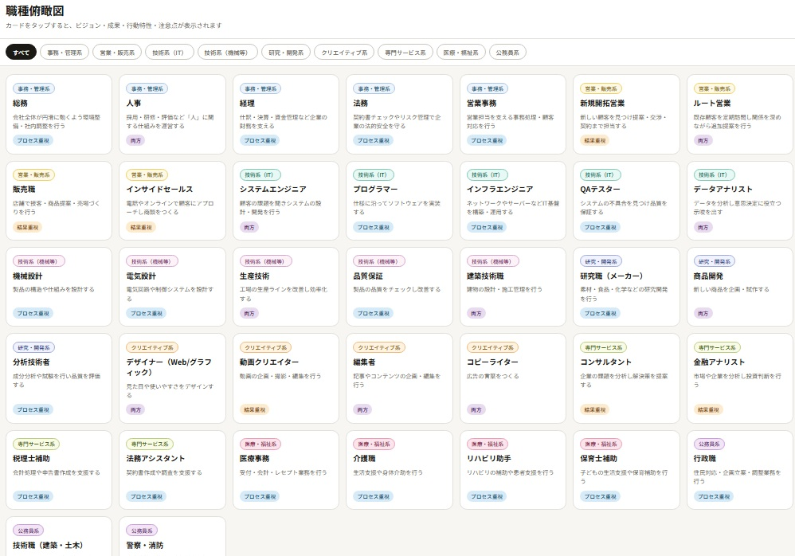
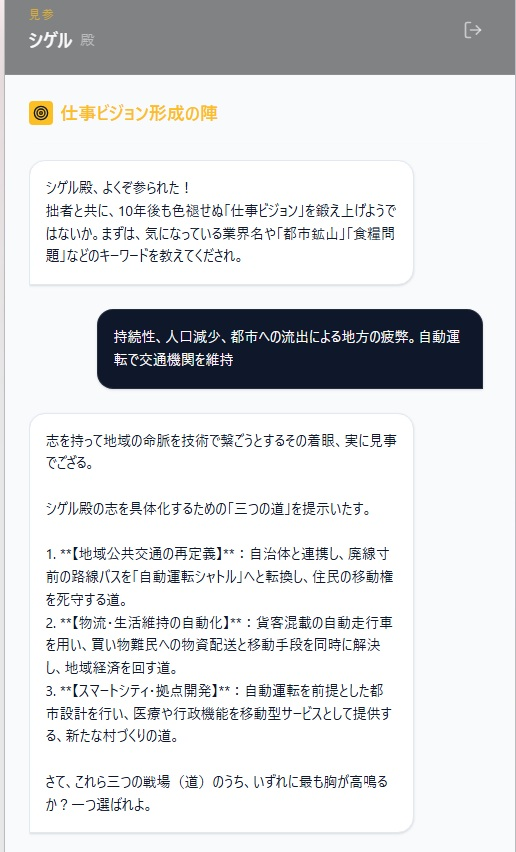

Samurai Career Suite
侍AIキャリアコンサルタントが軍師・相棒となって、
君の秘めた才能や志を言語化します。
（自己PR、仕事ビジョン、学業PR、適職分析）
4/10 業界研究（4大国策16項目）エリアを追加しました。
4/11 職種研究（9分類37職種）エリアを追加しました。
Samurai Career Suite (AI版) で自己PR等を作成する

業界研究 (国策を研究する)
公務員・民間志望者必見。国の動向と自分の志を紐付け面接の説得力を高めよう。

職種俯瞰 (仕事を知る)
9分類37職種を網羅。「結果とプロセス」「苦手な人」などがわかるデータベース。
ログイン不要・ニックネームのみで今すぐ参陣可能
—— 侍AIとの問答イメージ ——
